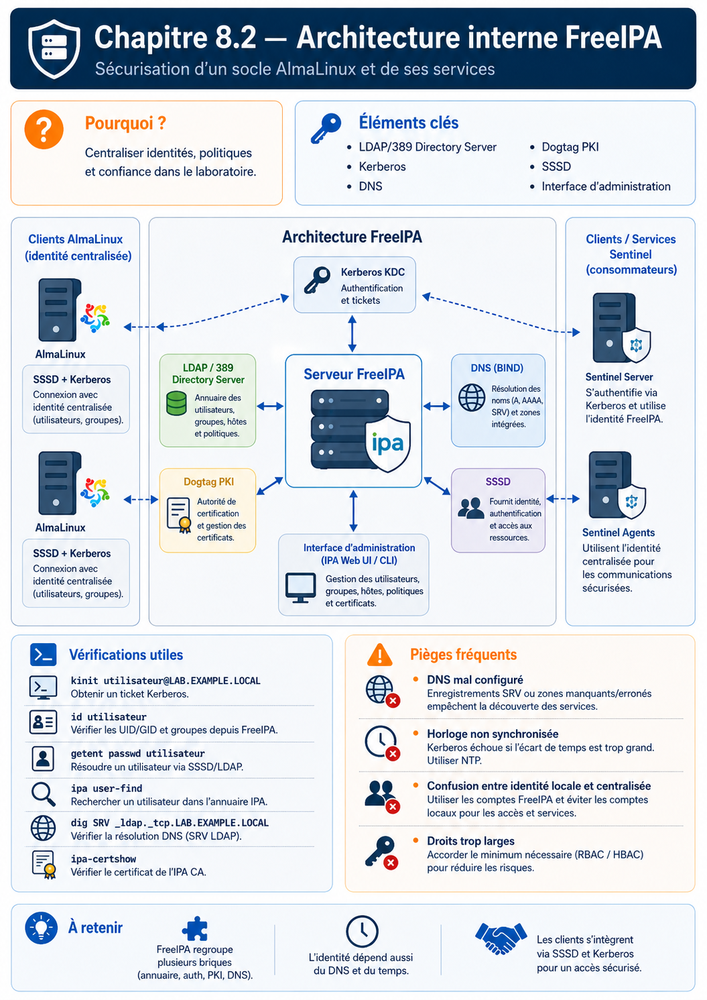

Chapitre 8.2 — Comprendre l'architecture interne de FreeIPA
Campagne 8 — FreeIPA
« Diagnostiquer FreeIPA commence par nommer le composant qui devait répondre. »
Vous êtes ici
Partie II — Industrialiser la sécurité
Campagne 8 — FreeIPA
8.1 Présentation de FreeIPA
► 8.2 Architecture interne
8.3 Installation du serveur
8.4 Gestion des utilisateurs
8.5 Groupes et rôles
8.6 Politiques sudo
8.7 Hôtes et règles HBAC
8.8 Certificats
8.9 Intégration de Sentinel
8.10 Mission d'administration
Objectifs pédagogiques
À la fin de ce chapitre, vous serez capable de :
- associer chaque fonction FreeIPA à son composant ;
- expliquer le parcours d'une authentification Kerberos ;
- décomposer un principal utilisateur, hôte ou service ;
- relier principal, ticket,
keytab, KVNO et nom DNS sans les confondre ; - distinguer annuaire LDAP, KDC, PKI, DNS et cache client ;
- choisir les premiers outils de diagnostic ;
- identifier les dépendances critiques du domaine.
Pourquoi ce chapitre existe
La commande ipa user-show peut échouer alors que Kerberos fonctionne ; une connexion SSH peut échouer alors que l'utilisateur existe dans LDAP. FreeIPA est une intégration de services spécialisés, pas un démon unique.
Comprendre leurs frontières permet de chercher un problème au bon endroit au lieu de redémarrer tous les composants.
Vue d'ensemble
L'installation coordonne ces briques et leur configuration. Elle ne les rend pas interchangeables.
389 Directory Server et LDAP
389 Directory Server stocke les entrées du domaine : utilisateurs, groupes, hôtes, services, règles HBAC, règles sudo, permissions et métadonnées.
LDAP est le protocole utilisé pour consulter et modifier cet annuaire. Une entrée possède un nom distinctif, des classes d'objet et des attributs. L'API FreeIPA protège l'administrateur d'une grande partie de cette complexité.
ipa user-show admin --all
ipa group-find
Dire « LDAP authentifie l'utilisateur » est imprécis dans l'architecture habituelle d'IdM : Kerberos fournit l'authentification du domaine. LDAP peut vérifier un secret par une opération bind, mais ce n'est pas le parcours privilégié d'un client FreeIPA intégré.
Pourquoi ne pas modifier directement LDAP ?
Une modification brute peut contourner validations, attributs calculés, contrôles d'accès et logique d'API. Utilisez d'abord ipa, l'interface Web ou les modules Ansible FreeIPA. Les outils LDAP servent surtout à comprendre et diagnostiquer.
Kerberos : prouver une identité sans transmettre le mot de passe à chaque service
Le KDC (Key Distribution Center) comprend conceptuellement :
- l'AS (Authentication Service), qui délivre le ticket initial ;
- le TGS (Ticket Granting Service), qui délivre les tickets de service.
Le mot de passe ne circule pas vers chaque application. Le client conserve des tickets temporaires dans un cache :
kinit admin
klist
kdestroy
Un ticket prouve une authentification, pas un droit administratif universel. L'API et les politiques continuent de contrôler les opérations.
Principaux, SPN et keytab
Un principal est le nom unique d'une identité connue du royaume Kerberos. Il ne désigne pas uniquement une personne : un hôte ou un service doit aussi pouvoir prouver son identité.
Sa forme générale est :
composant[/instance]@ROYAUME
Dans le laboratoire, trois familles apparaissent :
| Principal | Identité représentée | Secret ou clé utilisé par |
|---|---|---|
alice@SENTINEL.EXAMPLE.TEST |
utilisateur humain | Alice, généralement via son mot de passe |
host/sentinel01.sentinel.example.test@SENTINEL.EXAMPLE.TEST |
hôte enrôlé | la machine sentinel01 via son keytab |
HTTP/sentinel01.sentinel.example.test@SENTINEL.EXAMPLE.TEST |
service HTTP de Sentinel | le service qui accepte les tickets destinés à ce nom |
Le premier composant indique le type d'identité. Pour un service, l'instance est généralement le FQDN de l'hôte qui le fournit. L'ensemble HTTP/sentinel01...@ROYAUME est souvent appelé SPN (Service Principal Name). Le type de service fait partie du nom : HTTP/sentinel01... et host/sentinel01... sont deux principaux différents.
Le royaume est conventionnellement écrit en majuscules. Le FQDN reste en minuscules dans les exemples. Cette convention ne transforme toutefois pas automatiquement un nom DNS en principal : l'identité doit exister dans le KDC et posséder des clés.
Le même FQDN peut donc apparaître dans plusieurs systèmes, avec des fonctions différentes :
| Objet | Question à laquelle il répond |
|---|---|
| enregistrement DNS | « Où joindre sentinel01 ? » |
| principal Kerberos | « À quelle identité Kerberos ce ticket est-il destiné ? » |
| compte POSIX | « Sous quel UID le processus s'exécute-t-il ? » |
| SAN du certificat X.509 | « Pour quels noms ce certificat TLS est-il valide ? » |
Aligner ces noms simplifie l'exploitation, mais ils ne sont pas interchangeables. Créer un enregistrement DNS ne crée pas le principal ; créer le principal n'ajoute pas automatiquement un certificat ni un compte Linux.
Du principal au ticket de service
Supposons qu'Alice ait déjà obtenu un TGT avec kinit. Lorsqu'un client Kerberos veut joindre le service HTTP, il demande au TGS un ticket pour le principal exact :
kinit alice
kvno HTTP/sentinel01.sentinel.example.test
klist
kvno demande réellement un ticket de service. klist doit alors montrer au moins :
krbtgt/SENTINEL.EXAMPLE.TEST@SENTINEL.EXAMPLE.TEST
HTTP/sentinel01.sentinel.example.test@SENTINEL.EXAMPLE.TEST
Le TGT permet de demander d'autres tickets ; le ticket HTTP/... est destiné au service HTTP nommé. Posséder un ticket ne donne pas automatiquement accès à toutes ses fonctions : l'application applique encore ses règles d'autorisation.
Dans FreeIPA, observez les objets sans extraire de secret :
ipa user-show alice --all
ipa host-show sentinel01.sentinel.example.test --all
ipa service-show HTTP/sentinel01.sentinel.example.test --all
Le chapitre 8.8 créera explicitement le service si nécessaire :
ipa service-add HTTP/sentinel01.sentinel.example.test
Ce que contient un keytab
Un service non interactif ne peut pas saisir un mot de passe à chaque démarrage. Il conserve donc dans un keytab une ou plusieurs entrées associant :
- un principal ;
- un numéro de version de clé, le KVNO ;
- un type de chiffrement ;
- la clé secrète correspondante.
L'inventaire peut être lu sans afficher les clés :
sudo klist -k -e /etc/krb5.keytab
Un même principal peut apparaître plusieurs fois parce que plusieurs types de chiffrement ou versions de clé coexistent. Lors d'une rotation, le KVNO côté KDC progresse. Si le service conserve seulement une ancienne clé, le client obtient parfois bien son ticket mais le service ne peut pas le déchiffrer. Ce symptôme oriente vers un keytab périmé plutôt que vers le mot de passe de l'utilisateur.
Le keytab est l'équivalent opérationnel d'un mot de passe de machine ou de service :
- copié sur deux machines, il duplique l'identité ;
- lisible par un autre compte, il permet potentiellement d'agir comme le service ;
- versionné ou sauvegardé sans protection, il reste exploitable jusqu'à la rotation des clés ;
- supprimé sans procédure de reprovisionnement, il empêche le service de prouver son identité.
Ne copiez donc pas /etc/krb5.keytab pour « réparer » rapidement un autre hôte. Enrôlez ou reprovisionnez l'identité concernée avec les outils IdM et limitez la lecture au compte qui en a besoin.
Diagnostic par couche
| Observation | Ce qu'elle valide | Ce qu'elle ne valide pas |
|---|---|---|
ipa service-show HTTP/... réussit |
l'objet de service existe dans IdM | le service possède la bonne clé |
kvno HTTP/... réussit |
le KDC délivre un ticket pour le principal | le serveur sait le déchiffrer |
klist montre HTTP/... |
le ticket est dans le cache client | l'autorisation applicative |
klist -k -e montre HTTP/... |
le fichier contient une entrée nommée | l'accord du KVNO avec le KDC |
| l'authentification GSSAPI réussit | ticket et clé correspondent au service joint | les droits métier d'Alice |
💎 Point d'expertise — DNS intervient parfois dans la construction ou la canonicalisation du nom de service. Un alias, un nom canonique et un PTR incohérents peuvent alors conduire le client à demander un ticket pour un principal différent de celui présent dans le keytab. La correction durable consiste à définir le nom canonique et les principaux nécessaires, pas à désactiver aveuglément les contrôles de nom.
DNS : nommer et découvrir
IdM publie des enregistrements SRV afin que les clients trouvent LDAP et Kerberos. Les FQDN servent aussi dans les principaux et certificats.
dig +short ipa01.sentinel.example.test
dig +short -t SRV _ldap._tcp.sentinel.example.test
dig +short -t SRV _kerberos._udp.sentinel.example.test
Une entrée /etc/hosts peut résoudre un nom, mais ne remplace pas les enregistrements de découverte ni une architecture DNS cohérente. La résolution directe et inverse doit être décidée avant l'installation.
Le temps : dépendance de sécurité
Kerberos rejette les échanges lorsque l'écart d'horloge dépasse la tolérance prévue. Cette contrainte limite la réutilisation de messages capturés.
timedatectl
chronyc tracking
chronyc sources -v
Forcer l'heure manuellement masque le problème. Les serveurs et clients doivent partager une source de temps fiable et supervisée.
Dogtag PKI et certmonger
Avec une CA intégrée, Dogtag PKI émet et révoque les certificats du domaine. Il ne doit pas être confondu avec Kerberos : tous deux gèrent des identités cryptographiques, mais leurs protocoles, usages et durées de vie diffèrent.
certmonger s'exécute sur la machine qui utilise un certificat. Il génère ou protège la demande locale, dialogue avec la CA, suit l'expiration et renouvelle selon sa configuration.
La clé privée n'est pas envoyée à la CA.
Apache, API et interface Web
Les commandes ipa et l'interface Web utilisent l'API du serveur, exposée par Apache. Elles orchestrent annuaire, Kerberos et PKI en appliquant les autorisations FreeIPA.
ipa ping
ipa env
ipa user-show admin
Une page Web accessible prouve que le frontal répond, pas que l'annuaire, le KDC et la CA sont tous sains.
SSSD : l'intégration côté client
SSSD (System Security Services Daemon) relie les interfaces Linux aux fournisseurs d'identité :
| Consommateur | Rôle de SSSD |
|---|---|
NSS / getent / id |
rechercher utilisateurs et groupes |
| PAM / SSH | participer à l'authentification et à l'accès |
sudo |
récupérer les règles centralisées |
| HBAC | évaluer utilisateur, hôte et service |
| cache | supporter certaines opérations hors ligne |
Commandes de première intention :
systemctl status sssd --no-pager
sssctl domain-list
sssctl domain-status sentinel.example.test
sssctl user-checks alice
getent passwd alice
id alice
sss_cache -E invalide des caches et peut augmenter la charge ; ce n'est pas une correction à exécuter systématiquement.
Dépendances et modes de panne
| Symptôme | Premières vérifications |
|---|---|
| serveur introuvable | DNS, SRV, pare-feu |
kinit échoue |
heure, KDC, principal, secret |
ipa échoue avec un ticket valide |
API Apache, LDAP, autorisation |
id alice échoue sur un client |
SSSD, DNS, annuaire, cache |
sudo -l incomplet |
règle, groupe d'hôtes, fournisseur sudo, cache |
| certificat non renouvelé | getcert list, CA, principal, permissions, hooks |
L'outil ipactl status donne une vue des services IdM sur un serveur. systemctl et les journaux de chaque composant donnent ensuite le détail.
Culture technique — standards et intégration
FreeIPA combine des standards, mais son intérêt vient précisément de l'intégration : schémas, API, politiques, clés, découverte et outils d'exploitation sont conçus ensemble. Réassembler manuellement « un LDAP + un Kerberos + une CA » demande de recréer ce contrat.
Mise en pratique — suivre deux parcours
Sans modifier la plateforme, complétez ces deux chaînes avec le composant et la preuve attendue :
kinit admin→ KDC →klist;getent passwd alice→ NSS → SSSD → annuaire/cache.
Sur un environnement IdM existant :
dig +short -t SRV _kerberos._udp.sentinel.example.test
chronyc tracking
kinit admin
klist
ipa ping
ipa user-show admin
Conservez l'heure, la commande, le résultat et le composant validé. Un résultat réussi ne valide que le maillon réellement exercé.
Impact sur Sentinel
Sentinel interagira indirectement avec plusieurs composants : Dogtag émettra ses certificats, certmonger les renouvellera, SSSD fournira les identités humaines au système et l'application autorisera les SAN DNS des clients mTLS. Le code ne doit pas interroger directement toutes les bases FreeIPA.
Synthèse
- 389 Directory Server stocke les objets ; LDAP permet de les consulter ;
- Kerberos authentifie avec des tickets destinés à des principaux précis ;
- utilisateurs, hôtes et services possèdent des principaux distincts ;
- un
keytabcontient des clés de principal versionnées par KVNO et doit être protégé comme un secret ; - DNS découvre les services et stabilise leurs noms ;
- Dogtag émet les certificats, tandis que
certmongerles suit sur le client ; - SSSD relie le domaine à NSS, PAM, HBAC et
sudo; - l'API FreeIPA coordonne ces services sans les confondre ;
- un diagnostic efficace part du maillon correspondant au symptôme.
Pour aller plus loin
Le chapitre suivant transforme cette architecture en laboratoire installé, avec des contrôles avant et après chaque étape.
Continuer vers le chapitre 8.3 — Installer le serveur FreeIPA
Références : Planning Identity Management, Installing Identity Management, Principal names and DNS — MIT Kerberos et Application servers and keytabs — MIT Kerberos.
Schéma récapitulatif
